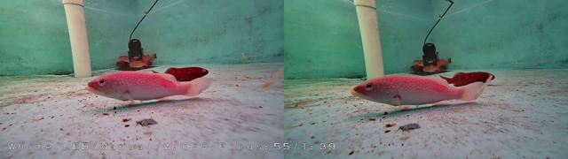

SalmoSonar Visión
datasets · videos · predicciones · atención
pose_v2-bezierfusion-dataset2
Precisión92,5 %368 aciertos, 30 falsos
Recall94,4 %22 no detectados
F193,4 %IoU ≥ 0.5
IoU medio0,86de los aciertos
Error de puntos6,2 %de la diagonal de la caja
Tiempo68 mspor imagen
Modelo best.pt · confianza mínima 0.25 · imagen 1920 px · dataset completo
Dónde acierta y dónde se equivoca
120 de 159 imágenes sin ningún error. En cada imagen: ✓ acierto (IoU ≥ 0.5), FP detección sin etiqueta, FN etiqueta sin detección. Clic en una imagen para ver cajas, probabilidades y el mapa de atención.


